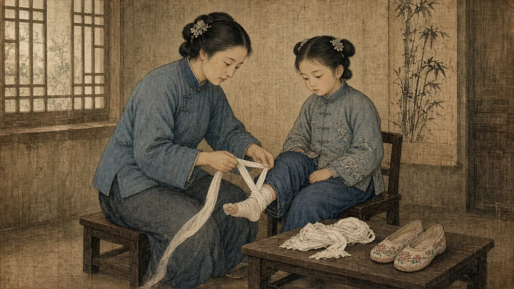
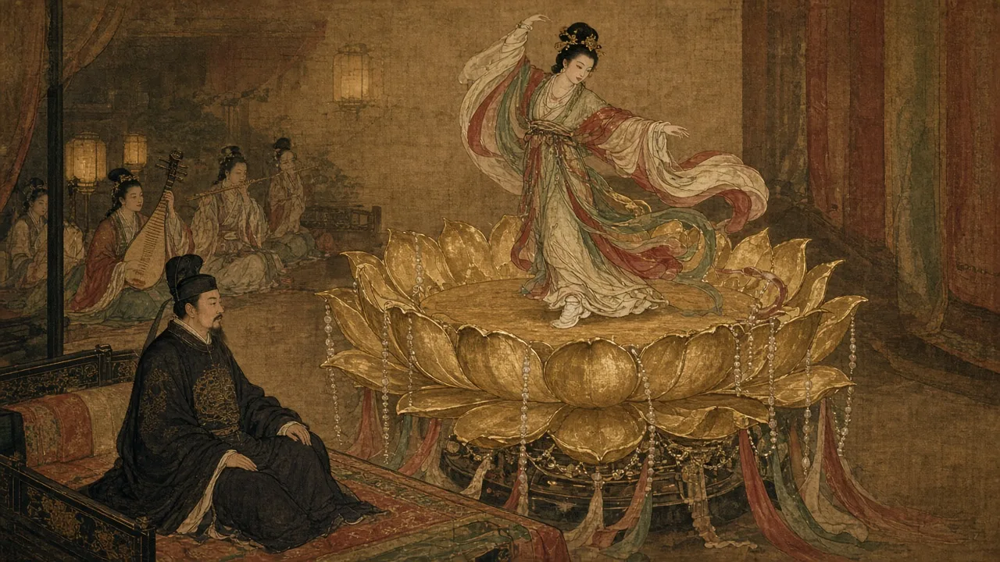
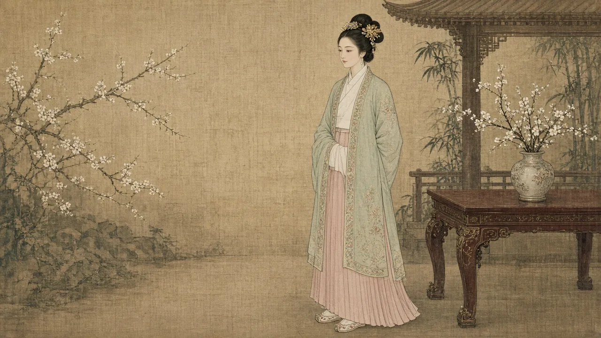
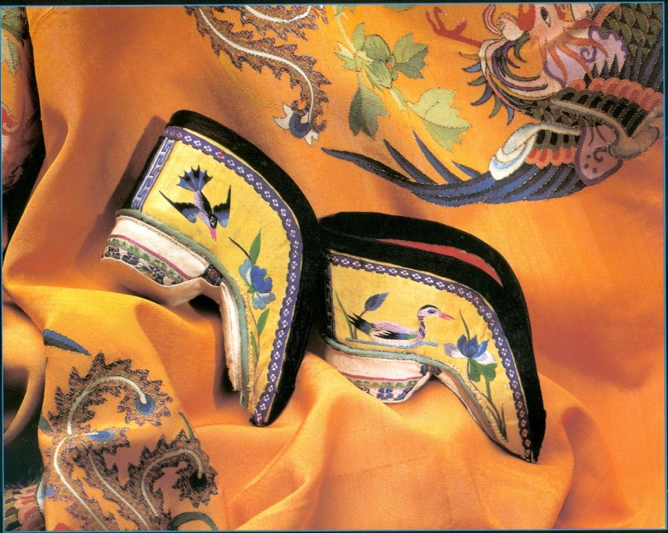
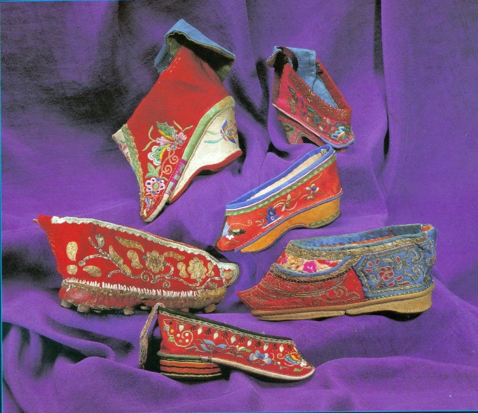
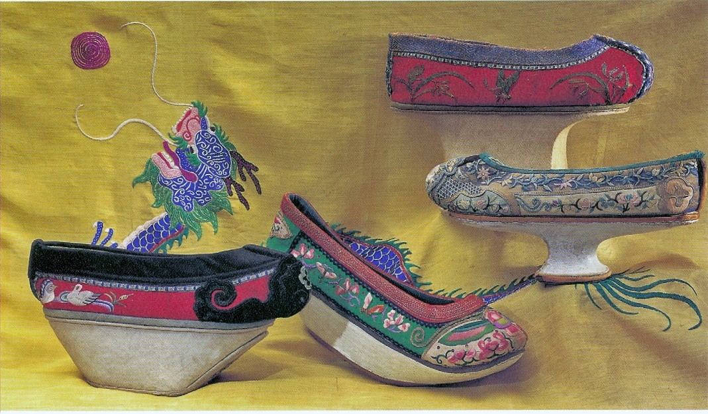
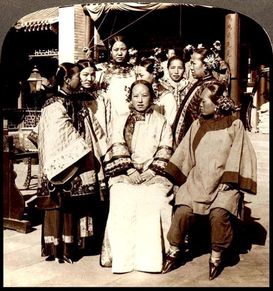
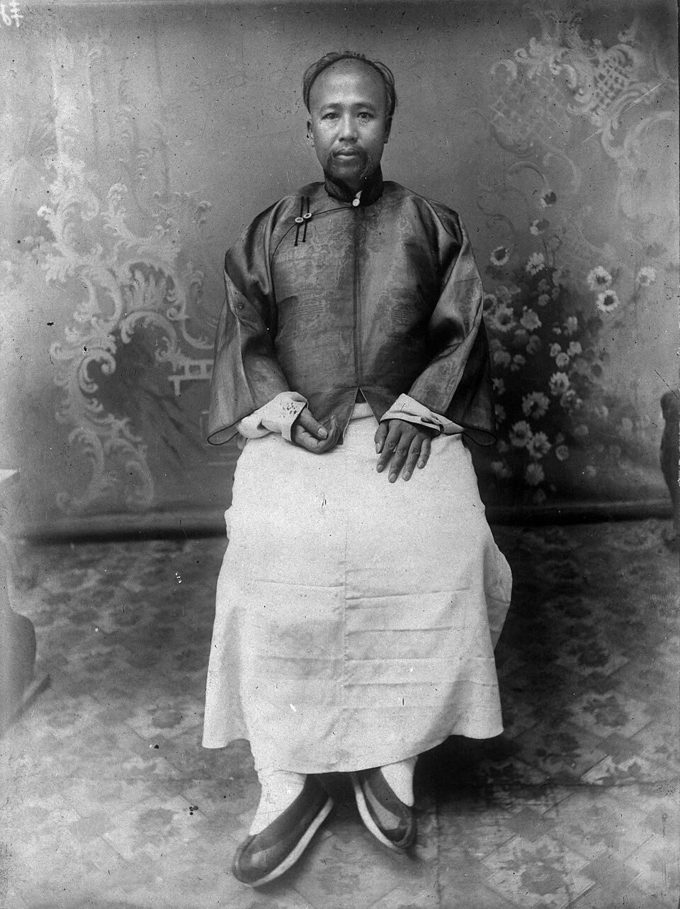
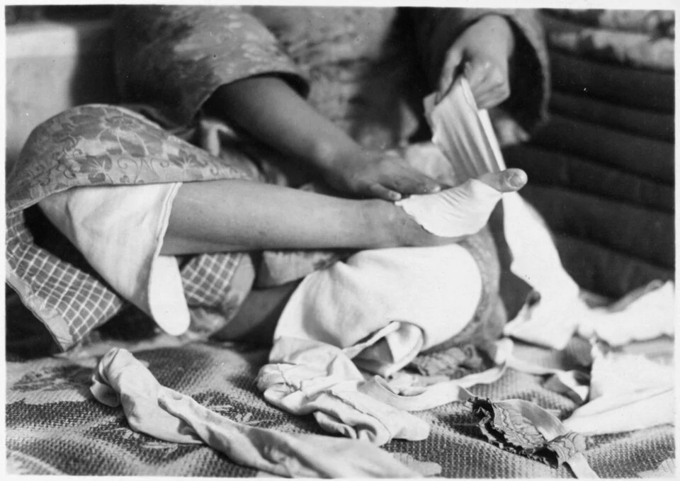

Foot Binding Linked Beauty, Family Status, and Bodily Constraint
How can we explain a valued practice that harmed and constrained the body?
Origins · Development · Reform · Cultural comparison
Start here · a definition
What was foot binding?

AI-generated illustration of a mother binding her daughter’s feet, in the style of a Qing-era painting.
Foot binding was the practice of tightly wrapping young girls’ feet to keep them small.
When: about 1,000 years, ending in the 1900s
How: toes folded under, feet wrapped tightly from about age 5
Goal: a three-inch “golden lotus” foot
Why: seen as beautiful, and it helped a daughter marry well
Sources: Dorothy Ko, Cinderella’s Sisters: A Revisionist History of Footbinding (2005); Patricia Buckley Ebrey, A History of China; McClung Museum, Bound to Be Beautiful.
Video · a first-person account
Chinese Foot Binding: “In Her Own Words”
As you watch
Whose story is this, and when did she live?
Who bound her feet, and why?
How did it shape her daily life?
Video: “Chinese Footbinding ‘In Her Own Words,’” Seek Learning, YouTube. Open on YouTube.
Origins · legend and evidence
Origin Stories Explain Meanings More Securely Than a First Invention
The precise beginnings of foot binding remain uncertain.
Later stories link it to supernatural women, court beauties, and dancers.
Stories told later (click each)
A fox fairy
Yang Guifei, a Tang court beauty
Yao Niang, a Southern Tang dancer
Legends, not records of a first use

AI-generated illustration: Yao Niang dances on a golden lotus for Li Yu, as the legend tells it.
A repeated origin legend is not the same as contemporary evidence.
×
The fox fairy
One folk tale says Daji, the wicked consort of the last Shang king, was really a fox spirit in human form. Her disguise was imperfect, so she wrapped her feet to hide them. Court women copied her.
A villain story told long after the Shang. It explains nothing about real origins.
×
Yang Guifei
The most famous beauty of the Tang court (died 756). Later writers imagined her with tiny, graceful feet, and tales circulated about a small stocking or slipper left behind after her death.
Tang art shows court women with natural feet. The link was made by later admirers.
×
Yao Niang
A dancer at the court of Li Yu, last ruler of the Southern Tang (r. 961–975). He built a six-foot golden lotus hung with jewels and ribbons. She bound her feet with white silk into a crescent-moon shape and danced on it.
The earliest version we have was written in the Song, more than a century later.
Sources: Ebrey, A History of China, p. 143; Dorothy Ko, Cinderella’s Sisters (2005); McClung Museum, Bound to Be Beautiful; instructor's existing lecture.
The Song · what the evidence shows
Song Evidence Shows a Gradually Expanding Beauty Practice
Early associationsSong writers linked early binding with entertainers and with beauty.
Gradual spreadIt spread gradually and probably remained largely elite during Song.
EvidenceSong texts and elite burials supply evidence beyond the origin stories.

AI-generated illustration: an elite Song woman in a beizi jacket and pleated skirt, with small bound-foot shoes.
Later mass prevalence should not be projected backward.
Sources: Ebrey, A History of China, pp. 143–144; bioarchaeological study, “Foot binding in a Ming dynasty cemetery near Xi'an, China.”
Class and family · who bound, and how tightly
Class and Family Resources Shaped Bodily Constraints
Resources
Song evidence links binding especially with elite settings.
Servants and other resources could help households accommodate reduced mobility.
Especially tight binding was linked with the ability to afford servants.
Family
Mothers participated in transmitting the bodily standard.
Source: Ebrey, A History of China, pp. 143–144.
Social meanings · beauty, eroticism, marriage
Erotic Meanings and Marriage Expectations Gave Bound Feet Social Value
Bound feet and their shoes could acquire erotic meanings.
Beauty, respectability, status, and marriage expectations could overlap.
Preferences were culturally shaped and varied over time.
Expected marriage advantages were not guaranteed outcomes.

A pair of embroidered lotus shoes for bound feet. From Beverly Jackson, Splendid Slippers (1997).
Sources: instructor's existing lecture; Yuan-Ling Chao, “Poetry and Footbinding,” World History Connected (2009); Brown and Satterthwaite-Phillips, PLOS ONE (2018).
Social meanings · desire, secrecy, marriage
Hidden from View, the Bound Foot Became a National Fetish
Fetish: an object or body part that becomes necessary to desire, a fixation.
Concealment: bindings and slippers stayed on, even in bed. Baring the foot was as shocking as public nudity in the West.
The shoe: lotus shoes became love tokens in the Ming novel Jin Ping Mei and wine cups in drinking games.
Connoisseurs: a Qing writer ranked bound feet the way gardeners ranked blossoms. Meet Fang Xun

A collection of embroidered lotus shoes for bound feet. From Beverly Jackson, Splendid Slippers (1997).
Why did it last a thousand years? Because it was tied to marriage and male desire. Men wanted small feet, so matchmakers demanded them, and a mother who didn't bind risked her daughter's whole future.
×
Fang Xun, Grading Fragrant Lotuses
In the Qing dynasty a writer called Fang Xun 方絢 (possibly a pen name) wrote Xianglian pinzao 香蓮品藻, a connoisseur's guide to bound feet, which he called “fragrant lotuses.”
He copied the form of a Song-dynasty guide to plum blossoms. He prized three qualities, plumpness, softness, and fineness, sorted feet into five shapes and eighteen types named after lotus varieties, and ranked them in nine grades, from “divine” down to “false.”
Howard Levy, The Lotus Lovers, discusses Fang Xun (as “Fang Hsun”) as a leading voice of the foot-binding admirers. Chinese text: Xianglian pinzao, Chinese Text Project.
Sources: instructor's existing lecture; Howard S. Levy, The Lotus Lovers (1966/1992); Wang Ping, Aching for Beauty (2000); Fang Xun, Xianglian pinzao.
Pause & Process · 5 minutes
Explain a Song Beauty Standard through Evidence
How did new physical standards of beauty affect women's lives?
Write 3–4 sentences linking a bodily consequence to class or family circumstances.
Use a lecture example as evidence and include one limit of that evidence.
3 min writing · 2 min reread and revise.
Ming (1368–1644) and Qing (1644–1911) · wider reach
Ming and Qing Diffusion Changed the Practice's Social Reach

Later evidence, not Song: embroidered lotus shoes in several regional styles. From Beverly Jackson, Splendid Slippers (1997).
Binding spread beyond the largely elite settings of the Song.
During Ming and Qing it appeared across wider regions and social groups.
Shoes could express handwork, taste, and claims to refinement.
Expansion did not make prevalence or severity uniform.
Sources: Ebrey, A History of China, pp. 143–144; Chao, “Poetry and Footbinding”.
Variation · Han, Hakka, and Manchu
Han and Manchu Differences Show That Foot Binding Was Not Universal
Manchu Woman's Shoe · Met 45.108.3
Manchu Woman's Shoe, China, late 19th–early 20th century. Silk, wood(?). Note the tall central pedestal. The Metropolitan Museum of Art, 45.108.3 (public domain).
Binding became associated with many Han Chinese communities.
Manchu women generally maintained unbound feet and distinctive footwear.
Hakka communities illustrate important variation within Han society.
Ethnic and regional labels alone do not explain every case.
Sources: Hsieh, “Origin and Migrations of the Hakkas” (1929), ed. David K. Jordan; John R. Shepherd (2016); The Metropolitan Museum of Art, 45.108.3.
The Qing · two ethnic standards side by side
Under Qing Rule, Feet Marked the Line Between Han and Manchu Women

PLACEHOLDER · "A group of high-class Peking women" (Manchu lady center, Han women with bound feet) · Leiden University Libraries
A group of high-class Peking women: a Manchu lady in the center, Han women around her with bound feet. Photograph, early 20th century. Leiden University Libraries.
Qing rulers forbade Manchu women to bind, while Han women kept binding.
Sources: John R. Shepherd, “The Qing, the Manchus, and Footbinding,” Frontiers of History in China 11, no. 2 (2016); Dorothy Ko, Cinderella's Sisters (2005); photograph, Leiden University Libraries.
Late Qing reform · 1870s–1890s
Chinese Reformers and Foreign Activists Challenged Foot Binding
Late-Qing reformers connected the practice with national and social reform.
Chinese activists, Christian missionaries, and secular foreign women organized campaigns.

Left: Alicia Little, founder of the Shanghai Natural Feet Society, 1894. Right: Kang Youwei, c. 1905. Wikimedia Commons (public domain; CC BY 4.0).
Anti-foot-binding societies: Amoy (Xiamen), 1874–75, missionary John MacGowan's Heavenly Foot Society · Nanhai, near Canton, 1883, Kang Youwei's Unbound Feet Society · Shanghai, 1895, Alicia Little's Natural Feet Society · Shanghai, 1897, Unbound Feet Society founded by Liang Qichao, Tan Sitong, and others
Sources: Yen-Wei Miao, “The Social Participation of the Memsahibs in Late-Qing China: The Shanghai Natural Feet Society (1895–1906)” (2011); Dorothy Ko, Cinderella’s Sisters (2005); Chao, “Poetry and Footbinding.”
Late Qing reform · the program
What the Reformers Actually Called For
The pledge
Members would not bind their daughters.
Their sons would not marry women with bound feet.
Together, families made unbound daughters marriageable.
Read the 1897 rules
The arguments
Healthy mothers, strong nation
Shame before foreigners
Health and pain
Slogan: tianzu 天足, “natural feet”
Demands on the state
1898: Kang Youwei asked the Guangxu Emperor to ban binding.
1902: a Qing edict under Cixi urged families to stop.
×
Shanghai Unbound Feet Society, 1897
From its “Trial Rules” (Shiban buchanzu hui jianming zhangcheng), printed in the reform newspaper Shiwu bao:
“Daughters born to members may not have their feet bound.”
“Sons born to members may not marry women with bound feet.”
Our translation of the Chinese text (凡入會人所生女子，不得纏足；凡入會人所生男子，不得娶纏足之女). Drafted by Wu Qiao and Liang Qichao.
Sources: Liang Qichao and Wu Qiao, “Shiban buchanzu hui jianming zhangcheng,” Shiwu bao (1897); Dorothy Ko, Cinderella’s Sisters (2005); Kang Youwei, memorial requesting a ban on foot binding (1898); Qing edict of 1902.
The Republic · the law meets the family
The Republic Banned Foot Binding, but the Ban Was Nearly Impossible to Enforce
1912 · The ban: Sun Yat-sen's new Republican government ordered an end to foot binding.
1910s–1930s · Enforcement: Provinces and later the Nationalist government sent inspectors and threatened fines, with uneven results.

Top: girls with bound feet in Beiping (Beijing), 1934, photograph by Ellen Catleen. Bottom: a woman rewrapping her feet, North China, from the Japanese photo series Atō Ingashū (1920s–30s). Wikimedia Commons (public domain).
A law could not easily reach inside the home. As long as small feet meant beauty, desirability, and a good marriage, many mothers kept binding.
Sources: Dorothy Ko, Cinderella's Sisters (2005); Melissa J. Brown and Damian Satterthwaite-Phillips, “Economic correlates of footbinding,” PLOS ONE 13, no. 9 (2018).
Cultural comparison · a framework
Cultural Comparison Helps Us Examine How Bodies Acquire Social Value
Practices to compare
Corsets, cosmetic surgery, and high heels.
The wider history also includes tattoos, piercings, cranial shaping, and lip plates.
How to compare
Compare the age of participants, pressures, intended meanings, and consequences.
Understanding a practice's context does not require approving it.
High Heels Offer a Useful Comparison with Important Limits
Dimension
Foot binding (the case under discussion)
High-heel comparison
Starting point
Childhood intervention decided by adults
Usually shoe wearing by an older wearer; specify the example
Bodily effect
Sustained reshaping with long-term consequences
Changed loading and gait during wear, with possible injury
Social pressure
Family expectations, status, and valued beauty
Fashion, attractiveness, dress codes, or other expectations
Ability to stop
Removing bindings did not simply restore an altered foot
Shoes can be removed; prior injury or pressure may remain
Historical meaning
Specific meanings in a changing Chinese setting
Meanings depend on period and social setting
Both examples connect appearance, social expectations, and movement.
Research associates high-heel use with pain, bunions, and wearer injury.
×
Bunion (hallux valgus)
A deformity at the joint of the big toe, in which the toe angles toward the other toes. It is more than a simple bony growth.
Source: Maxwell S. Barnish and Jean Barnish, “High-heeled shoes and musculoskeletal injuries: a narrative systematic review,” BMJ Open 6, no. 1 (2016).
Now step back · explanation and judgment
Explanation and Ethical Judgment Require Specific Comparisons
Explain who made decisions and who experienced the consequences.
Distinguish similarity in social mechanisms from equality of harm.
Use evidence about age, constraint, reversibility, and meaning.
Return to the Song case before drawing a broad conclusion.
Connect the Song Case with a Careful Cultural Comparison
How did the economic and social realities of the Song period affect the lives of women, particularly concerning marriage practices, property, and new physical standards of beauty?
Write 3–5 sentences using foot binding to connect bodily consequences, family setting, and resources.
Then identify one useful parallel and one limit of the closing comparison.
3 min writing · 2 min parallel and limit.
Marriage and property context from Lecture 3.
End of Chapter 8
Appendix · instructor use
Activity Response Criteria
Debrief guides, comparison guidance, an optional first-person source, and sources.
Appendix · Activity 1 · Q10's beauty component
What a satisfactory answer includes
A satisfactory response links bodily reshaping and reduced mobility with family or class circumstances. It can use the Song evidence from lecture to establish elite examples. It should qualify prevalence, individual motives, or variation. Do not require later dynasty details in this Song-focused response.
Appendix · Activity 2 · Q10 and the closing comparison
What a satisfactory answer includes
The written response should connect a beauty standard with family status, marriage, and material resources using the Song evidence and the family context from Lecture 3. It should distinguish evidence from a claimed guaranteed marriage benefit. The response should also identify a parallel, such as appearance reinforced by social pressure, and a substantive difference, such as childhood reshaping versus removable footwear. Assess the quality of explanation; a shared moral verdict is not required.
Main worked comparison, with verified health associations and clear differences in age, reversibility, and social context.
Corsets
A short example of historically valued bodily presentation; do not assert identical mechanisms or consequences.
Cosmetic breast surgery
A comparison prompt about beauty, risk, access, and social pressure, not a medical advice section.
Tattoos and piercings
Useful for asking how meaning and choice vary; specific practices require their own context.
Lip plates and cranial shaping
Retain in the wider comparison list, without an anonymous exoticizing image montage or one universal explanation.
Circumcision and female genital cutting
May remain in the instructor's broader comparison bank. Distinguish procedures, ages, contexts, and harms; do not equate them automatically with footwear or reproduce the unsourced old prevalence statistic.
Cultural relativism
Explain cultural understanding as a method and distinguish it from automatic ethical approval.
"Only different by degree"
Replace with a question about which differences are matters of degree and which change the nature of the comparison.
Lotus shoe photographs on slides h, l, and bb: Beverly Jackson, Splendid Slippers: A Thousand Years of an Erotic Tradition (Berkeley: Ten Speed Press, 1997).